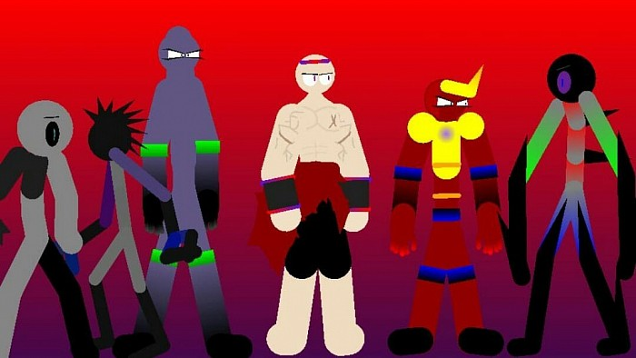
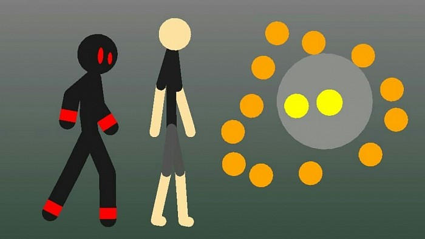

Estos diseños son cuando yo estaba mejorando en mi animación y cuando estaba familiarizándome con la manera de hacer figuras
 Se que no hay mucho contenido por esta parte debido a que mayormente mi hermano y yo somos reservados con las animaciones o cosas beta que hacíamos debido a que se ve feo y obviamente hay gente que puede criticar de mala manera estos aspectos se que está bien recibir críticas pero también hay que tener en cuenta que mi hermano y yo no estudiamos animación estuvimos aprendiendo por nuestra propia cuenta debido a que no podíamos ir a estudiar algún lugar que enseñen animacion por escazes de recursos